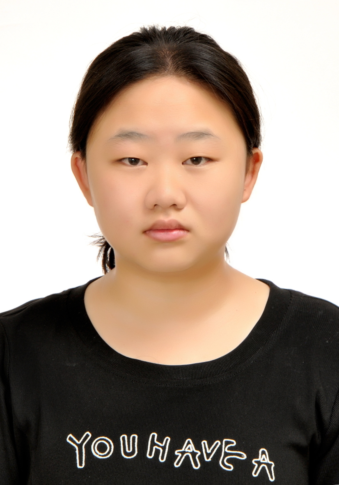

Basic Information

- Name:RUI MIJIA
- Program:International Business Management(IBM)
- School:International College, Payap University
- Location:Chiang Mai, Thailand
Education
- Payap University, International College | Chiang Mai, Thailand
- Bachelor of International Business Management(IBM)
- Expected Graduation: 2030
Working Experience
- Summer Part-Time Experience
- Participated in practical workplace training and completed daily assigned tasks responsibly.
- Communicated and cooperated with different group of people to improve interpersonal and problem-solving abilities.
- Adapted to formal working environments, developed professional work attitudes and basic business teamwork skills.
Interest & Specialty
- Photography & Visual Creation: Passionate about portrait, street and documentary photography; skilled at observing details, recording daily life and multicultural scenes.
- Cross-cultural observation and communication
- Media content creation and social practice
Language Proficiency
- Chinese: Native Speaker
- English: Fluent in listening, speaking, reading and writing
- Thai: Fluent in daily communication and social interaction
Skills
- Proficient in basic computer skills including Microsoft Word, PowerPoint and Excel
- Basic photo editing and visual composition ability
- Strong cross-cultural communication and adaptive skills
- Responsible teamwork, time management and task execution